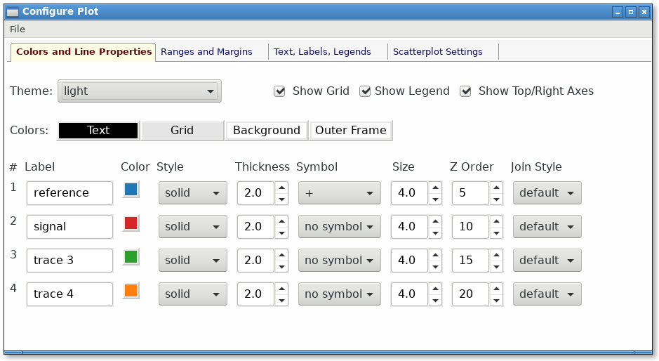
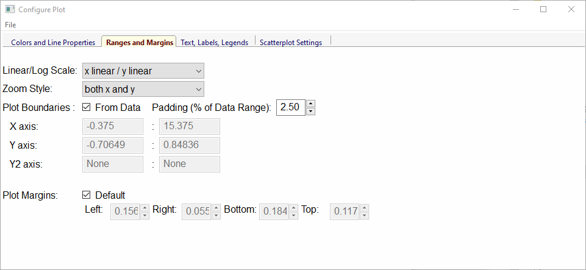
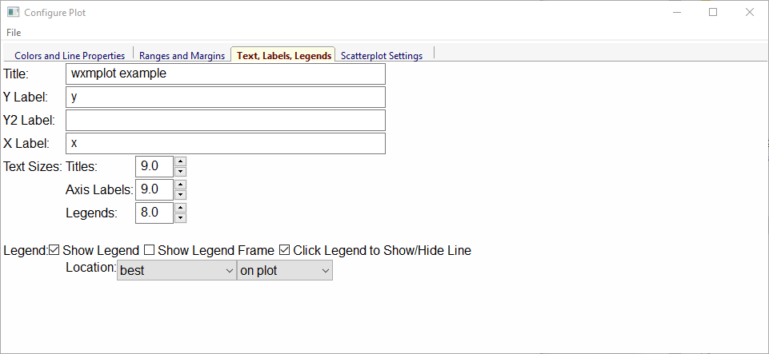
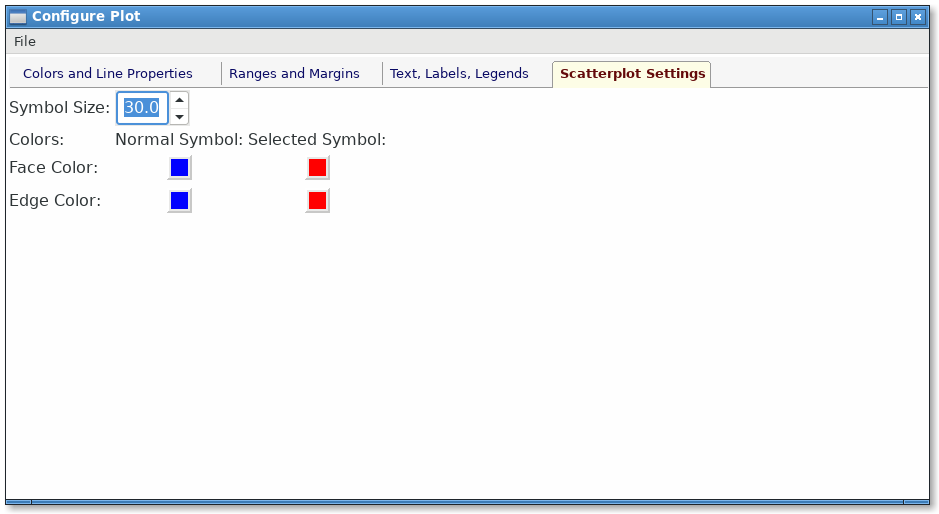
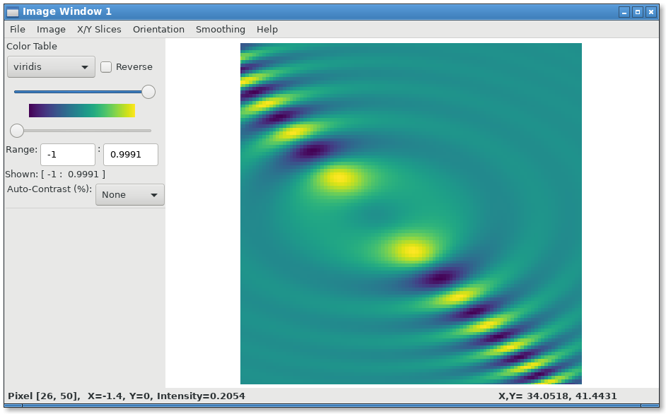
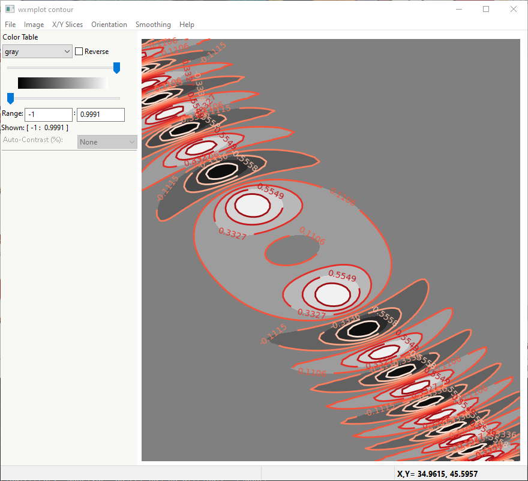
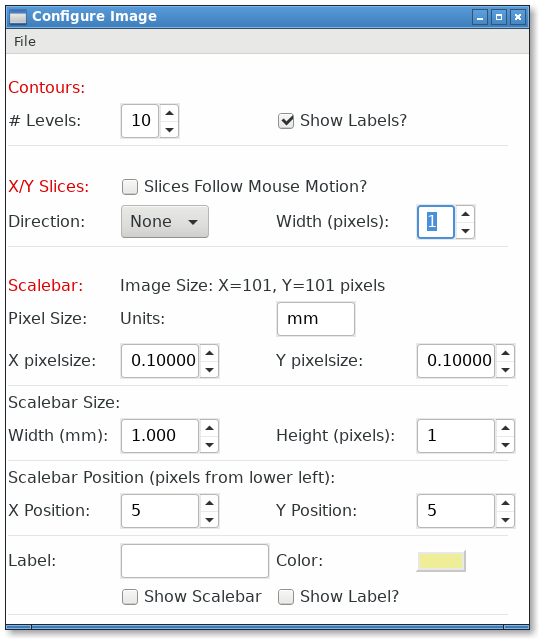
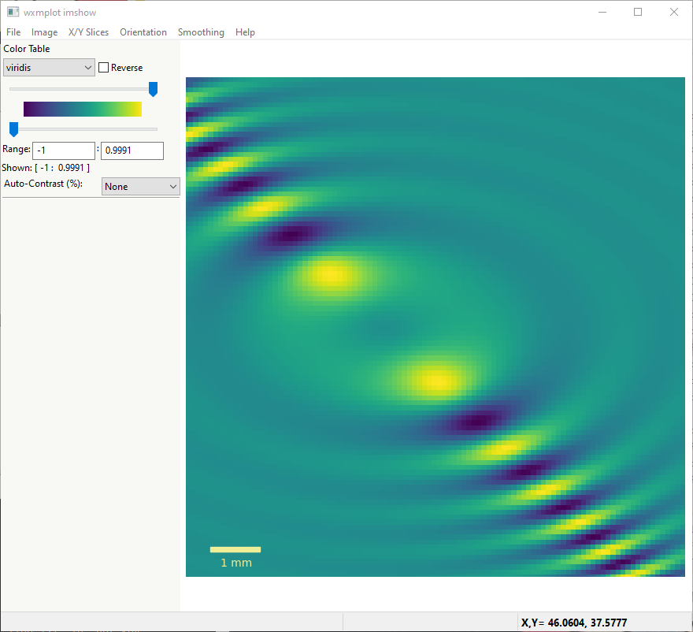

Overview#
wxmplot provides simple functions for making Line Plots (or 2D or XY Plots) and displaying image data. These are similar to the simplest functions from matplotlib.pyplot, but offer richer interactivity and customization. It is not easy to convey interactivity in a static document, but here and in Interactive displays, we will try to show how easy it is to use wxmplot for exploratory data analysis. Importantly, wxmplot not only makes more interactive plotting available when writing a script, but but also exposes that interactivity and flexibility to the end-user at run time. This allows a programmer to add plotting capabilities to an application and enable the end-user to interact with their data and fully customize the plots when running the application.
Line Plots with plot()#
Let’s start with a simple script using matplotlib.pyplot:
#!/usr/bin/python
import numpy as np
np.random.seed(0)
x = np.linspace(0.0, 15.0, 151)
y = 4.8*np.sin(4.2*x)/(x*x+8) + np.random.normal(size=len(x), scale=0.05)
m = 5.0*np.sin(4.0*x)/(x*x+10)
import matplotlib.pyplot as plt
plt.plot(x, y, '-+', label='data')
plt.plot(x, m, '-', label='model')
plt.title('matplotlib example')
plt.xlabel('t (sec)')
plt.ylabel('y')
plt.legend()
plt.show()
This is a pretty straight-forward matplotlib script and produces a very high-quality plot of (depending a bit on the backend and OS):

From the matplotlib plot, moving the mouse around updates the x and y values displayed to match the location of the mouse. Clicking on the magnifying glass icon and then clicking and dragging a box allows the user to zoom in on portions of the plot. Clicking on the icon with 4 arrows allows the user to pan to other parts of the data range. Clicking on the icon with 3 bars allows the user to adjust the plot margins. The icon of the antique diskette allows the user to save a PNG file of the plot display.
With wxmplot, that script would be rewritten as:
#!/usr/bin/python
import numpy as np
np.random.seed(0)
x = np.linspace(0.0, 15.0, 151)
y = 4.8*np.sin(4.2*x)/(x*x+8) + np.random.normal(size=len(x), scale=0.05)
m = 5.0*np.sin(4.0*x)/(x*x+10)
import wxmplot.interactive as wi
wi.plot(x, y, label='data', marker='+', xlabel='t (sec)', ylabel='y',
title='wxmplot example', show_legend=True)
wi.plot(x, m, label='model')
and yields the plot shown below.

There are some stylistic differences in the results, but the displayed results are very similar. There is a difference in programming interface in that the configuration of the plot details (labels, titles, whether the legend is shown) is encapsulated into fewer functions – one per plot trace – rather than several function calls to set up the plot configuration and then one show() method to render the plot. In fact, the wxmplot example has no show() function at all. As will be discussed more in Interactive displays, the wxmplot functions immediately generate displays when in an interactive session and allow interaction at the shell to continue, without the need for a blocking show() function.
Wxmplot gives more run-time interaction and flexibility to the end-user than the matplotlib display, and without cluttering the display with little icons. As with the pyplot example, moving the mouse around updates the display of x and y values displayed to those of the mouse. To zoom in on a region, the user simply clicks and drag to draw a box to zoom in. The Navigation Toolbar is gone but there are options for saving and printing the image, and many more options for configuring the details of the plot from the File and Options menus. These will be described in more detail in the next section.
In addition to the interactive.plot() function, there are several
more functions to augment these line plots, including those to add text,
arrows, lines, and markers to plots. These and more functions are
discussed in detail in Interactive displays.
User Interaction and Configuring Line Plots#
The basic wxmplot line plots support a few basic user interactions. First, as mentioned above, the user can zoom in by drawing a box: Clicking the left mouse button and dragging will draw a rectangular box, and releasing the mouse button will zoom in to that rectangle. The arrow keys will pan the view of the plot in the direction of the arrow. These zooming and panning actions can be repeated multiple time. Typing “Ctrl-Z” (or “Apple-Z” for Mac OS X) will zoom out or un-pan to the previous view or until the full plot is shown.
A second important feature is that when the Plot Legend is displayed, clicking on the Legend entry for any trace will toggle whether that trace is displayed. For the example above with only two traces this may not be so important, but this ability to easily turn on and off traces can be very useful when many traces are displayed.
Right-clicking within the Axes (that is the part of the Frame showing the Data) will show a pop-up window that allows the user to quickly un-zoom, Display the Plot Configuration Window, or Save the Image.
Each Plot Window will have a File menu, an Option menu, and a Help menu that gives even more functionality, and a series of Ctrl-Key bindings to use as shortcuts to Menu selections. From the File menu, the user can:
Save an image of the plot to a PNG file [Ctrl-S]
Copy the image to system clipboard to paste into other applications [Ctrl-C].
Export the data in the plot to a plain text file [Ctrl-D]
Setup and preview printing.
Print the image [Ctrl-P]
From the Options menu, the user can:
Display the Plot Configuration Window [Ctrl-K]
Toggle whether the Legend is displayed [Ctrl-L]
Toggle whether the Grid is displayed [Ctrl-G]
Un-Zoom all to the full data range [Ctrl-Z]
Select whether zooming will zoom both X and Y Axes, X only or Y only.
Select whether the X and Y Axes use Linear or Log Scale.
Perform some simple data transformations to show \(dy/dx\), \(yx\), \(yx^2\), \(y^2\), \(\sqrt{y}\), or \(1/y\).
The Help menu will display a quick cheat-sheet to remind you of these Ctrl-Key options.
The Plot Configuration Window is an important tool for configuring and customizing line plots. This is a tabbed window frame with 4 panels to allow the user to configure essentially every aspect of the plot:
Colors and Line Properties
Ranges and Margins
Text, Labels, and Legend
Scatterplot displays
with these configuration settings available, any user should be able to create beautiful presentation-quality image from their data.
Color and Line Properties#
The Colors and Line Properties tab of the Plot Configuration Window allows the user to configure the basic colors for the plot. This includes setting the plotting theme. Selecting any of the available themes (there are more than 25 themes available, about half of them derived from Seaborn) will reset all the default colors for the plot components and for each line trace, and many of the resource settings of matplotlib. The themes and their color selections are carefully chosen to make pleasing and informative color choices, some with special attention to color-blindness.
Aside from the theme choices, the user can change the colors for Text, Grid, Background, and Outer Frame, and also select whether the Grid is shown, whether the Legend is Shown, and whether the Top and Right Axes Spines are shown. In addition, the user can set the any of the following attributes for each trace: the label, color, the transparency of the color, line style, line width, symbol to use for a marker, marker size, z-order, and join style for each trace drawn, and whether the plot will fill the plot area to zero. Starting from the good default values set by the pre-defined themes, this gives the end-user control over nearly every aspect of the plot displaying their data.
{kind=link}

Ranges and Margins Properties#
The Ranges and Margins tab allows the user to change the display data ranges and the outer margins of the plot. Here, the user can also select a Linear or Log scale for the X and Y axes.
The user can set the Plot Boundaries – exact X and Y ranges for the plot, or use the values of the data range. By default, the range shown is the data range padded by a few percent so that all the data is fully displayed. The user can change the “padding percentage”, or explicitly set each of the view limits.
Finally, the user can fine-tune the margins around the plot. By default these are chosen to give a small but noticeable empty space around the edge of the plot. If the user wants the Plot Legend to be off to the side or on top of the plot, they may need to adjust these margins.
{kind=link}

Text Properties#
The Text and Labels tab allows the user to set the title and labels for the X and Y axes, and to adjust the font size for these text components. Here, the details of the Legend can also be customized: whether it is shown, its location, and whether the legend entries can be clicked on to toggle the display of the corresponding line. To be clear, the text for the labels here is sent directly to matplotlib, and so can use its ability to render LaTeX (or, most of it) for displaying mathematical notation and symbols.
{kind=link}

ScatterPlot Properties#
The Scatterplot tab allows the user to set the colors and marker sizes for scatter plots.
{kind=link}

Displaying images with imshow() and contour()#
As with line plotting, wxmplot has a simple interactive.imshow()
function that displays image data and adds user-friendly controls to
manipulate and adjust the display of such data. While
matplotlib.pyplot.imshow() has the basic user action of zooming and
saving image files, interactive.imshow() has interactions that are
specific to displaying false color images from 2D arrays on intensity
values. An example using interactive.imshow() is:
#!/usr/bin/python
import numpy as np
import wxmplot.interactive as wi
y, x = np.mgrid[-5:5:101j, -4:6:101j]
dat = np.sin(x*x/3.0 + y*y)/(1 + (x+y)*(x+y))
wi.imshow(dat, x=x[0,:], y=y[:,0], colormap='viridis', wintitle='wxmplot imshow')
which will display the image and a control frame:
{kind=link}

To display that image data as a contour plot, one can just replace
interactive.imshow() with interactive.contour(). With the same
dataset but using:
wi.contour(dat, x=x[0,:], y=y[:,0], colormap='gray', wintitle='wxmplot contour')
which will show:
{kind=link}

In fact, the user can switch between showing the image data as a contour from the Image menu or with Ctrl-N.
User Interaction and Configuring Image and Contour displays#
As with the displays created with plot(), clicking anywhere on the image will
show the x, y, and intensity values in the status bar. If arrays for x
and y values have been passed in, both the indices and x and y values
for the pixel selected will be displayed. Similarly, clicking and dragging
will zoom in on a portion of the image, and using the arrow keys will pan
the image. Zooming and panning can be repeated indefinitely and undone.
From the Image or Contour panel, a few display customizations are immediately available. On the left hand side of the frame, there are a few controls to adjust the displayed image. First, the color lookup table for intensity can be changed to any of about 30 pre-defined tables and can be reversed. Sliders and entry boxes allow the user to change the threshold levels to adjust the contrast. A simple and reproducible approach to adjusting the contrast level is also provided: a drop-down list can be used to select contrast percentage using the histogram of values in the image. That is, selecting ‘Auto-contrast %’ of ‘1’ will put the lowest color value at the 1% percentile of intensities (that is the intensity such that 99% of the pixels have a higher intensity) and the highest value at the 99% percentile (that is the intensity such that 99% of the pixels have a lower intensity). Note that adjusting the contrast is disabled for contour plots.
There are several Menus and Ctrl-key shortcuts available from the Image Display Window to give more interaction. From the File menu, the user can
Save an image of the plot to a PNG file [Ctrl-S]
Copy the image to system clipboard to paste into other applications [Ctrl-C].
Export the data in the plot to a plain text file [Ctrl-D]
Save an image of the current Color Map
Setup and preview printing
Print the image [Ctrl-P]
From the Image menu, the user can:
Zoom Out all to the full data range [Ctrl-Z]
Display an Image Configuration Window [Ctrl-K]
Enhance the Auto-Contrast Level [Ctrl-+]
Reduce the Auto-Contrast Level [Ctrl–]
Display the histogram of intensities [Ctrl-H]
Toggle whether the Axes Labels are displayed [Ctrl-A]
Toggle whether the Grid lines are shown at the Axes Labels [Ctrl-G]
Toggle whether the image is displayed as a Contour Map [Ctrl-N]
Toggle whether a scalebar is displayed [Ctrl-B]
Toggle whether a 3-color map uses a black or white background [Ctrl-W]
From the X/Y Slices menu, the user can control whether clicking on a pixel on the image displays a X- or Y- slice through the image data as a line plot in a separate plotting window. From this menu, the user can select:
Show No X/Y Slices
Show Slices in the X direction [Ctrl-X]
Show Slices in the Y direction [Ctrl-Y]
Toggle whether the displayed slice should update as the mouse is moved
From the Orientation menu, the user can rotate and flip the image:
Rotate clockwise by 90 degrees [Ctrl-R]
Flip Top and Bottom [Ctrl-T]
Flip Left and Right [Ctrl-F]
Reset Flip and Rotations to original data
From the Smoothing menu, the user can select one of more than a dozen methods to smooth the data across pixels.
Finally, the Help menu will give a quick list of keyboard shortcuts.
Image Configuration Window#
Most of options for working with images and contour maps can be found from the main window or menu selections, but some options need more specialized configurations that can be accessed from the Image Configuration Window ([Ctrl-K]). Here, the user can select the number of levels for contour plots, and whether the contour line will show intensity values. For the X/Y slices, the user can select which slice is shown and also whether the slice shown sums over more than one pixel across the dimension chosen which can be useful for smoothing out noisy images:
{kind=link}

There are several options for configuring a scalebar to show on the image. The user can set the pixel size in the units of their choice, and then set the size of the scalebar in those units. The position and color of the scalebar and the text label to go below the scalebar can be set. The example shown above asserts that the pixel size is 0.1 mm, and will create a 1 mm scalebar in the lower left of the image, as shown below:
{kind=link}
